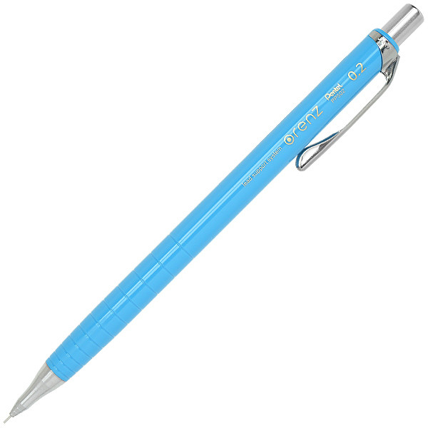

Orenz
An Orenz light blue 0.2 mm mechanical with 2B graphite color lead can adjust to your pressure level to reduce lead break.
- $5.25
- Orenz
- 0.2mm lead
- Color: light blue
- Lead color: graphite
- Shiny plastic
Mechanical pencils for sale with lead and free shipping.
An Orenz light blue 0.2 mm mechanical with 2B graphite color lead can adjust to your pressure level to reduce lead break.
A Color Flight black 0.3mm mechanical pencil with 2B graphit color lead made from plastic.
A Graphger 1000 Pental silver 0.5 mm mechanical with HB graphite color lead can adjust to your pressure level to reduce lead break made mostly from metal.
A Pilot Color End pink 0.7 mm mechanical with HB graphite color lead made mostly from plastic and rubber.
A PS-P100 KOKUYO dark blue 0.9 mm mechanical with 2B graphite color lead can adjust to your pressure level to reduce lead break made of hard plastic.